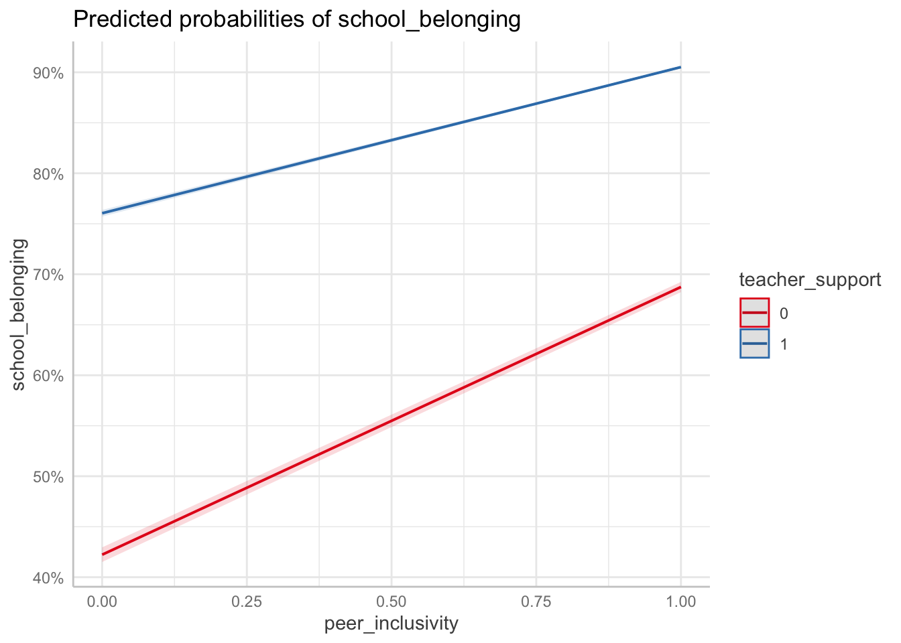

Warning: package 'lme4' was built under R version 4.5.2Warning: package 'performance' was built under R version 4.5.2Warning: package 'modelsummary' was built under R version 4.5.2Warning: package 'ggeffects' was built under R version 4.5.2Data for this chapter: school_belonging.csv
Copy school_belonging.csv into this project folder before rendering.
Not every outcome is continuous. When the thing you are predicting is yes or no, present or absent, the linear model is the wrong tool, and we move to generalized linear mixed models. These data cover 6,528 middle school students in 122 schools, with a binary indicator of whether each student reports a strong sense of belonging at school.
Warning: package 'lme4' was built under R version 4.5.2Warning: package 'performance' was built under R version 4.5.2Warning: package 'modelsummary' was built under R version 4.5.2Warning: package 'ggeffects' was built under R version 4.5.2Rows: 6,528
Columns: 8
$ student_id <dbl> 1, 2, 3, 4, 5, 6, 7, 8, 9, 10, 11, 12, 13, 14, 15…
$ school_id <dbl> 94, 68, 77, 7, 102, 67, 9, 78, 116, 63, 11, 37, 1…
$ school_belonging <dbl> 1, 0, 1, 0, 1, 1, 1, 0, 1, 1, 1, 1, 0, 1, 0, 1, 0…
$ peer_inclusivity <dbl> 1, 0, 1, 0, 0, 0, 1, 1, 0, 1, 1, 1, 0, 0, 1, 1, 0…
$ teacher_support <dbl> 1, 1, 1, 1, 0, 1, 0, 1, 1, 1, 1, 1, 0, 0, 0, 0, 0…
$ community_activities <dbl> 1, 0, 1, 1, 1, 1, 1, 1, 1, 1, 0, 0, 0, 1, 1, 0, 0…
$ small_school <dbl> 1, 1, 1, 0, 1, 0, 1, 0, 1, 1, 0, 0, 0, 0, 1, 0, 0…
$ school_context <chr> "Urban", "Urban", "Rural", "Urban", "Urban", "Sub…# A tibble: 2 × 3
school_belonging n proportion
<dbl> <int> <dbl>
1 0 1552 0.238
2 1 4976 0.762The function changes from lmer() to glmer(), and we specify a family and link.
m_null <- glmer(school_belonging ~ 1 + (1 | school_id),
family = binomial(link = "logit"),
data = belong)
summary(m_null)Generalized linear mixed model fit by maximum likelihood (Laplace
Approximation) [glmerMod]
Family: binomial ( logit )
Formula: school_belonging ~ 1 + (1 | school_id)
Data: belong
AIC BIC logLik -2*log(L) df.resid
7156.4 7170.0 -3576.2 7152.4 6526
Scaled residuals:
Min 1Q Median 3Q Max
-2.0065 0.5045 0.5391 0.5646 0.6550
Random effects:
Groups Name Variance Std.Dev.
school_id (Intercept) 0.04198 0.2049
Number of obs: 6528, groups: school_id, 122
Fixed effects:
Estimate Std. Error z value Pr(>|z|)
(Intercept) 1.17743 0.03499 33.65 <2e-16 ***
---
Signif. codes: 0 '***' 0.001 '**' 0.01 '*' 0.05 '.' 0.1 ' ' 1In a linear model we computed the ICC from two estimated variances. In a logistic model there is no estimated level-one variance, because for a binary outcome the residual variance is determined by the mean. The standard solution fixes it at \pi^2/3 \approx 3.29, the variance of the standard logistic distribution:
\text{ICC} = \frac{\tau_{00}}{\tau_{00} + \pi^2/3}
vc <- as.data.frame(VarCorr(m_null))
tau00 <- vc$vcov[vc$grp == "school_id"]
icc_logistic <- tau00 / (tau00 + (pi^2 / 3))
icc_logistic[1] 0.01259832performance::icc(m_null)# Intraclass Correlation Coefficient
Adjusted ICC: 0.013
Unadjusted ICC: 0.013Because that level-one variance is assumed rather than estimated, the logistic ICC is on a latent scale and is not directly comparable to an ICC from a linear model. Treat it as a rough indication of clustering, not as a precise proportion of variance in the observed outcome.
m_l1 <- glmer(school_belonging ~ peer_inclusivity + teacher_support +
community_activities + (1 | school_id),
family = binomial(link = "logit"),
data = belong)
summary(m_l1)Generalized linear mixed model fit by maximum likelihood (Laplace
Approximation) [glmerMod]
Family: binomial ( logit )
Formula:
school_belonging ~ peer_inclusivity + teacher_support + community_activities +
(1 | school_id)
Data: belong
AIC BIC logLik -2*log(L) df.resid
6201.1 6235.1 -3095.6 6191.1 6523
Scaled residuals:
Min 1Q Median 3Q Max
-4.3714 0.2340 0.3881 0.5127 1.6950
Random effects:
Groups Name Variance Std.Dev.
school_id (Intercept) 0.05803 0.2409
Number of obs: 6528, groups: school_id, 122
Fixed effects:
Estimate Std. Error z value Pr(>|z|)
(Intercept) -0.76738 0.07405 -10.36 <2e-16 ***
peer_inclusivity 1.10365 0.06470 17.06 <2e-16 ***
teacher_support 1.47461 0.06597 22.35 <2e-16 ***
community_activities 0.88352 0.06514 13.56 <2e-16 ***
---
Signif. codes: 0 '***' 0.001 '**' 0.01 '*' 0.05 '.' 0.1 ' ' 1
Correlation of Fixed Effects:
(Intr) pr_ncl tchr_s
per_nclsvty -0.540
techr_spprt -0.629 0.160
cmmnty_ctvt -0.457 0.078 0.113Coefficients from glmer() are on the log-odds scale, which almost nobody reads intuitively. Exponentiate to get odds ratios:
(Intercept) peer_inclusivity teacher_support
0.4642289 3.0151542 4.3693202
community_activities
2.4193931 2.5 % 97.5 %
.sig01 NA NA
(Intercept) 0.4015127 0.5367413
peer_inclusivity 2.6560645 3.4227913
teacher_support 3.8393868 4.9723980
community_activities 2.1294143 2.7488605An odds ratio of 2.4 for peer inclusivity means the odds of reporting strong belonging are 2.4 times higher for students who perceive their peers as inclusive, holding the other predictors constant and comparing students within the same school.
It does not mean those students are 2.4 times more likely to feel belonging. Odds and probability are different quantities, and they diverge sharply when outcomes are common. If the baseline probability is 50 percent, an odds ratio of 2.4 corresponds to about 71 percent, not 120 percent, which would be impossible. The looser phrasing is only approximately right when the outcome is rare, and it is worth avoiding entirely.
m_l2 <- glmer(school_belonging ~ peer_inclusivity + teacher_support +
community_activities + small_school + (1 | school_id),
family = binomial(link = "logit"),
data = belong)boundary (singular) fit: see help('isSingular')summary(m_l2)Generalized linear mixed model fit by maximum likelihood (Laplace
Approximation) [glmerMod]
Family: binomial ( logit )
Formula:
school_belonging ~ peer_inclusivity + teacher_support + community_activities +
small_school + (1 | school_id)
Data: belong
AIC BIC logLik -2*log(L) df.resid
6153.4 6194.1 -3070.7 6141.4 6522
Scaled residuals:
Min 1Q Median 3Q Max
-4.3602 0.2293 0.3564 0.5100 1.6515
Random effects:
Groups Name Variance Std.Dev.
school_id (Intercept) 0 0
Number of obs: 6528, groups: school_id, 122
Fixed effects:
Estimate Std. Error z value Pr(>|z|)
(Intercept) -1.00334 0.07745 -12.95 < 2e-16 ***
peer_inclusivity 1.10146 0.06445 17.09 < 2e-16 ***
teacher_support 1.46839 0.06566 22.36 < 2e-16 ***
community_activities 0.88178 0.06492 13.58 < 2e-16 ***
small_school 0.49675 0.06418 7.74 9.91e-15 ***
---
Signif. codes: 0 '***' 0.001 '**' 0.01 '*' 0.05 '.' 0.1 ' ' 1
Correlation of Fixed Effects:
(Intr) pr_ncl tchr_s cmmnt_
per_nclsvty -0.534
techr_spprt -0.619 0.158
cmmnty_ctvt -0.448 0.078 0.111
small_schol -0.412 0.045 0.047 0.030
optimizer (Nelder_Mead) convergence code: 0 (OK)
boundary (singular) fit: see help('isSingular') (Intercept) peer_inclusivity teacher_support
0.366654 3.008544 4.342245
community_activities small_school
2.415199 1.643378 Before interpreting the school-size coefficient causally, consider what else varies with school size. Small schools differ from large ones in funding, urbanicity, student composition, and staffing. Any of those could produce an association between size and belonging without size itself doing the work.
This is the step that makes generalized models communicable. Rather than asking your reader to think in odds ratios, compute the predicted probability for specific student profiles.
You are calculating adjusted predictions on the population-level (i.e.
`type = "fixed"`) for a *generalized* linear mixed model.
This may produce biased estimates due to Jensen's inequality. Consider
setting `bias_correction = TRUE` to correct for this bias.
See also the documentation of the `bias_correction` argument.# Predicted probabilities of school_belonging
teacher_support: 0
peer_inclusivity | Predicted | 95% CI
-----------------------------------------
0 | 0.42 | 0.42, 0.43
1 | 0.69 | 0.68, 0.69
teacher_support: 1
peer_inclusivity | Predicted | 95% CI
-----------------------------------------
0 | 0.76 | 0.76, 0.76
1 | 0.91 | 0.90, 0.91
Adjusted for:
* community_activities = 0.51
* small_school = 0.49
* school_id = 0 (population-level)
You can also compute specific contrasts by hand. The inverse logit function, plogis(), converts log-odds back to probabilities:
# A student with all supports, in a small school
profile_high <- data.frame(
peer_inclusivity = 1, teacher_support = 1,
community_activities = 1, small_school = 1, school_id = NA
)
# A student with none, in a large school
profile_low <- data.frame(
peer_inclusivity = 0, teacher_support = 0,
community_activities = 0, small_school = 0, school_id = NA
)
predict(m_l2, newdata = profile_high, type = "response", re.form = NA) 1
0.9500289 predict(m_l2, newdata = profile_low, type = "response", re.form = NA) 1
0.2682859 Setting re.form = NA asks for the prediction for a typical school rather than for any particular one. That is usually what you want when describing a general pattern.
The difference between those two probabilities is the number to lead with when talking to a principal. It says what fraction of students in each situation we expect to feel they belong, in units anyone can act on.
modelsummary(
list("Null" = m_null, "Student level" = m_l1, "+ School size" = m_l2),
exponentiate = TRUE,
stars = c("*" = .05, "**" = .01, "***" = .001),
gof_map = c("nobs", "aic", "bic"),
title = "Multilevel logistic models predicting strong school belonging (odds ratios)"
)| Null | Student level | + School size | |
|---|---|---|---|
| * p < 0.05, ** p < 0.01, *** p < 0.001 | |||
| (Intercept) | 3.246*** | 0.464*** | 0.367*** |
| (0.114) | (0.034) | (0.028) | |
| peer_inclusivity | 3.015*** | 3.009*** | |
| (0.195) | (0.194) | ||
| teacher_support | 4.369*** | 4.342*** | |
| (0.288) | (0.285) | ||
| community_activities | 2.419*** | 2.415*** | |
| (0.158) | (0.157) | ||
| small_school | 1.643*** | ||
| (0.105) | |||
| SD (Intercept school_id) | 0.205 | 0.241 | 0.000 |
| Num.Obs. | 6528 | 6528 | 6528 |
| AIC | 7156.4 | 6201.1 | 6153.4 |
| BIC | 7170.0 | 6235.1 | 6194.1 |
Setting exponentiate = TRUE puts the table on the odds ratio scale. Label the column clearly, because a reader who assumes log-odds will misread every number in it.
glmer() uses numerical approximation and is considerably more temperamental than lmer(). A different optimizer often fixes convergence warnings:
m <- glmer(y ~ x + (1 | group), family = binomial, data = d,
control = glmerControl(optimizer = "bobyqa",
optCtrl = list(maxfun = 100000)))Increasing nAGQ improves accuracy at the cost of speed, but is only available for models with a single random effect.